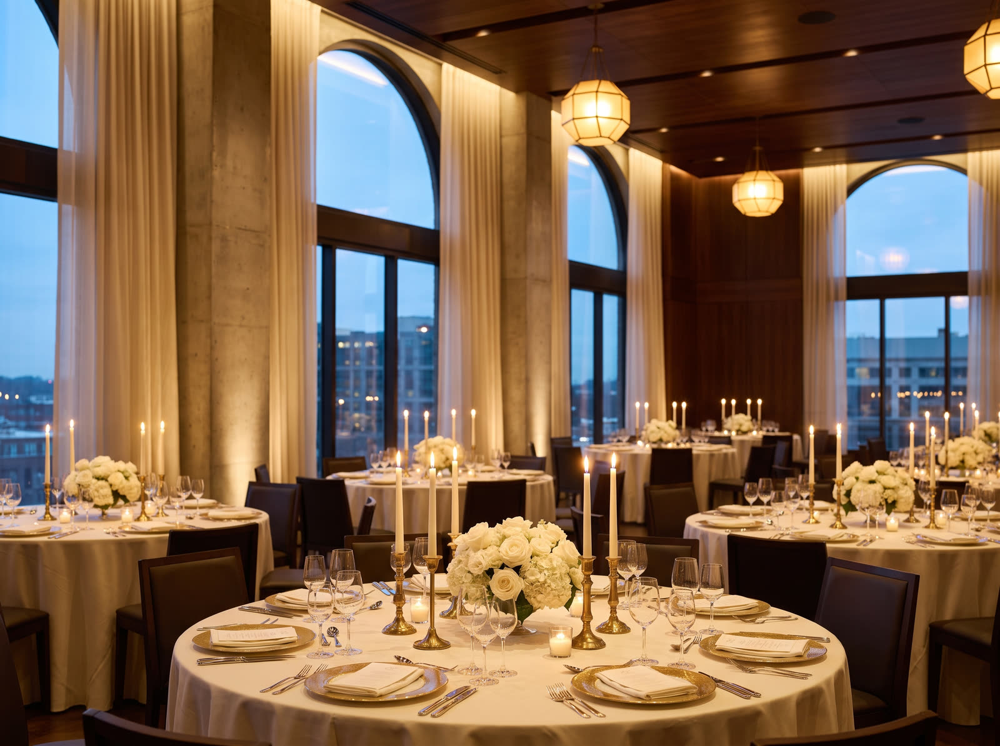
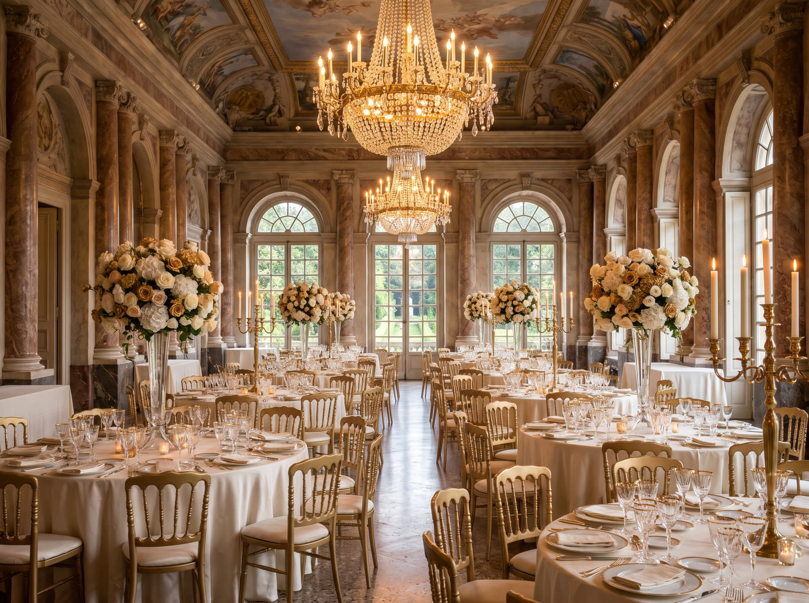
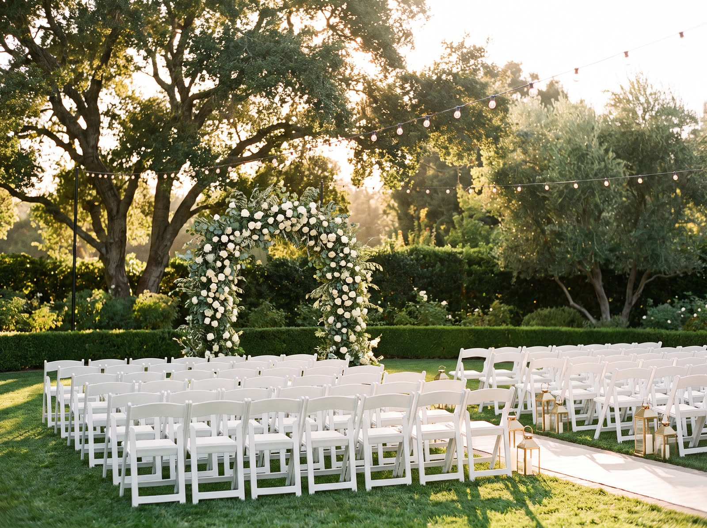
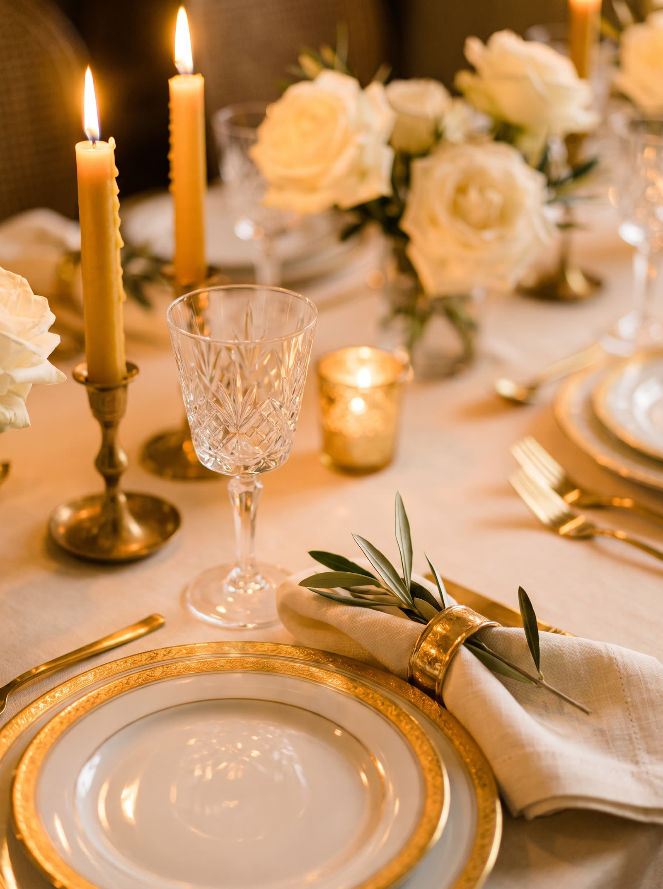
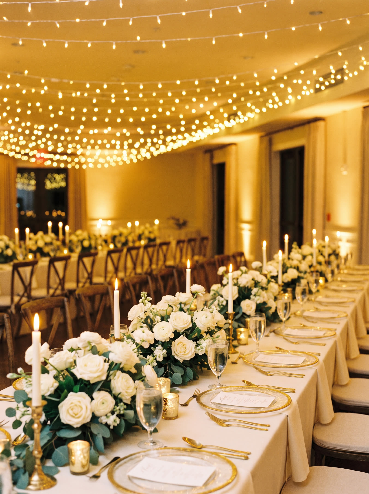

01Cidade Jardim
O Conde
Restaurante
Gastronomia internacional no coração da Cidade Jardim. A casa onde o grupo começou e onde a assinatura da cozinha foi escrita.
O Grupo O Conde nasceu no Restaurante O Conde, na Cidade Jardim, e virou três casas com a mesma assinatura gastronômica. Você escolhe o espaço. A cozinha, o salão e o cerimonial já vêm juntos.
As casas

01Cidade Jardim
Gastronomia internacional no coração da Cidade Jardim. A casa onde o grupo começou e onde a assinatura da cozinha foi escrita.

02De 100 a 300 convidados
Elegância italiana com sofisticação contemporânea. O maior dos três, para a festa em que a família inteira cabe.

03Cerimônia ao ar livre
Charme ao ar livre em um jardim exclusivo. Para quem sempre imaginou o sim debaixo de uma árvore.

A gente não monta o seu casamento no dia.
Monta nos seis meses antes.
Eventos
Cerimônias intimistas para até 50 convidados, com a mesma cozinha da festa grande.
De 100 a 300 pessoas, múltiplos ambientes e equipe completa do começo ao fim.
Valsa, pista e um roteiro pensado para a debutante, não para os pais.
Conferências, lançamentos e confraternizações com estrutura de evento social.

Agendar
A visita leva cerca de uma hora e é sem compromisso. Traga a data que você tem em mente, a gente diz na hora se ela está livre.
Falar no WhatsAppBotão de demonstração. Numa versão real ele abre a conversa no WhatsApp do grupo.